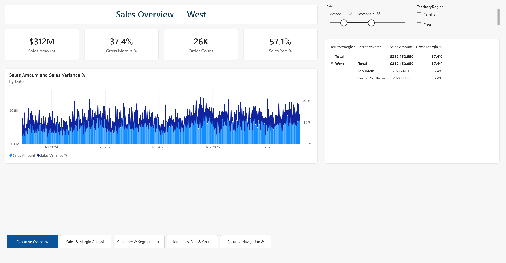
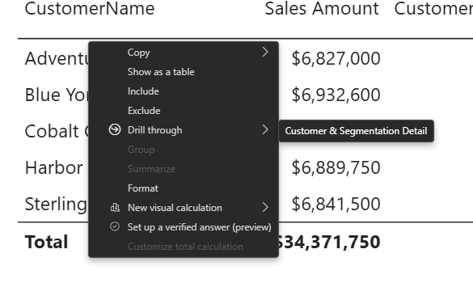
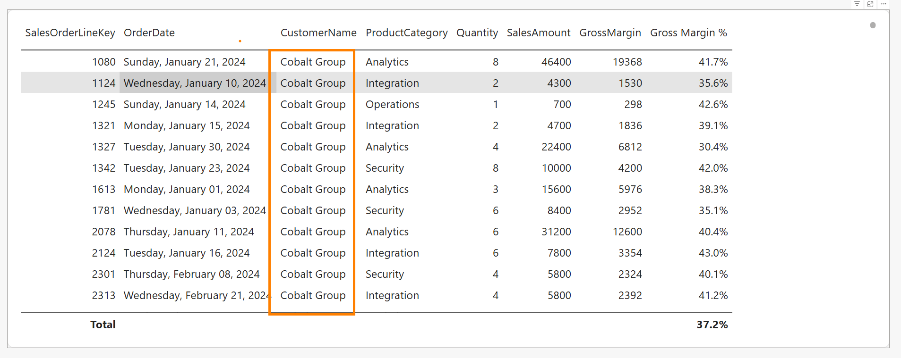

What you will produce
- Audience-focused pages
- Drillthrough details
- Report page tooltip
- Bookmarks and navigation
- Field parameters and selectors
- Mobile and accessibility review
Step-by-step walkthrough
- Open the report file from the earlier labs and confirm the model is ready.
- Open Power BI Desktop.
- Open the workshop file from
pbi-local\, using the semantic model from Lab 01 and the measures from Lab 02. - In the Fields pane, confirm measures such as
[Sales Amount],[Gross Margin],[Gross Margin %],[Sales Variance], and[Quantity]are available before you build report pages.
- Plan the report surfaces before you place visuals.
- List the audience for each page: executive, analyst, and operational/detail.
- Write one decision question per page so every visual supports a clear purpose.
- Keep slicer placement and naming consistent across pages so users can understand report context quickly.
Page or feature Exact name Required fields/measures Validation Page Executive SummarySales Amount,Gross Margin %,Sales Variance,QuantityExecutive KPIs and exceptions are visible. Page Analyst ExplorationDate, territory, product, customer, and segment slicers Slicers are clear and affect intended visuals. Operational/detail page Operational or detail page Monitoring visuals, exception list, or detail table Page answers a specific action question. Drillthrough page Customer DetailDimCustomer[CustomerName], KPI cards, transaction tableRight-click opens filtered detail and Back returns. Tooltip page Sales TooltipCompact sales/margin KPIs and trend Hover displays contextual information. Bookmarks Show/hide or reset state Buttons plus Data, Display, Current page settings Only intended visuals or filters change. Field parameter Metric Parameter[Sales Amount],[Gross Margin],[Gross Margin %],[Quantity]Slicer switches the visual metric. Optional field parameter Dimension ParameterDimProductCategory[ProductCategory],DimTerritory[TerritoryRegion],DimSegment[Segment]Slicer switches axis or rows. Conditional formatting Margin or variance thresholds Status, color, or icon rules with written meaning Color is not the only cue. Mobile layout Mobile canvas Highest-value KPIs and visuals Readable in mobile preview. Accessibility review Alt text, tab order, contrast, titles Selection pane and visual formatting settings Keyboard and screen-reader path documented. FYI — why page purpose matters.
A page should answer one clear decision question, otherwise users get a crowded canvas that mixes executive KPIs, analyst exploration, and operational actions together. SeparatingExecutive Summary,Analyst Exploration, andCustomer Detailkeeps the filter context understandable and makes each page easier to scan. Good UX in Power BI starts with information hierarchy, not with formatting. - Create the
Executive Summarypage.- Right-click an existing page tab and choose Insert page.
- Double-click the new page tab and rename it
Executive Summary. - In the Visualizations pane, click the Card icon to drop a blank card visual on the canvas, then drag
[Sales Amount]into the Fields well. Repeat this three more times so you have four separate cards for[Sales Amount],[Gross Margin %],[Sales Variance], and[Quantity]. - Resize each card so they are the same height and arrange them left to right in a single row across the top of the canvas, in the order listed above.
- Click the Line chart icon in the Visualizations pane to add a new visual below the card row. Drag
DimDate[Date](or your date table's month/date field) into the X-axis well and drag[Sales Amount]into the Y-axis well. - Resize the line chart so it spans most of the width of the canvas, directly under the KPI cards.
- Add one more visual for a high-level breakdown, such as a Clustered bar chart: drag
DimTerritory[TerritoryRegion]into the Y-axis well and[Sales Amount]into the X-axis well. Place this visual under or beside the line chart so the page tells one connected story.

Finished Executive Summary page layout. - Create the
Analyst Explorationpage.- Insert another new page and rename it
Analyst Exploration. - Add five Slicer visuals: click the Slicer icon once per field, then drag in one of
DimDate[OrderDate],DimTerritory[TerritoryRegion],DimProductCategory[ProductCategory],DimCustomer[CustomerName], andDimSegment[Segment]per slicer. Line them up across the top of the canvas or stack them down one side. - Click the Matrix icon to add a matrix visual. Drag
DimCustomer[CustomerName],DimProductCategory[ProductCategory],DimTerritory[TerritoryRegion], andDimSegment[Segment]into the Rows well, and drag[Sales Amount]into the Values well so analysts can compare across all four dimensions. - Add at least one chart, such as a Clustered column chart, with
DimDate[OrderDate](or month) in the X-axis well and[Sales Amount]in the Y-axis well, so the same five slicers filter both the matrix and this chart together.
- Insert another new page and rename it
- Create the operational or detail page for action monitoring.
- Insert another page and give it a plain descriptive name that matches its action question.
- Add monitoring visuals such as a Table or Line chart visual to track a key measure over time, plus an exception list: add a Table visual and drag in
DimCustomer[CustomerName],DimDate[OrderDate], and[Sales Variance], then use the Filters pane to keep only rows where[Sales Variance]is below zero (or another threshold) so the table only shows the records needing attention. - Keep this page focused on one action-oriented workflow instead of repeating the executive summary.
- Validate slicers, page filters, and report context.
- Click each slicer one at a time and confirm only the intended visuals change.
- Open the Filters pane and use page-level filters where a filter should apply to the whole page.
- Move or relabel slicers if a new learner could not quickly tell which filters are active.
- Create the
Customer Detaildrillthrough page.- Insert a new page and rename it
Customer Detail. - In the Visualizations pane, find the Drill through field well.
- Drag
DimCustomer[CustomerName]into the drillthrough field well. - Confirm Keep all filters matches your design intent.
- Add customer KPI cards and a transaction table to the page: add two Card visuals for
[Sales Amount]and[Quantity], then add a Table visual and drag inDimDate[OrderDate],DimProduct[ProductName],[Sales Amount], and[Quantity]so it lists that customer's individual transactions. - Add a back button with Insert > Buttons > Back or set a button action to Back.
- Test the page by right-clicking a customer value on another page and selecting Drill through > Customer Detail.

Right-click drillthrough pop-up menu. 
Resulting filtered Customer Detail drillthrough page. FYI — how drillthrough passes context.
Drillthrough automatically carries the selectedDimCustomer[CustomerName]value to the target page, which is why the detail page opens already filtered to that customer. Keep all filters decides whether the rest of the source-page context—such as date, territory, or product slicers—travels too. Use drillthrough when a user needs a focused deep dive from one data point, not just a different visual state on the same page. - Insert a new page and rename it
- Create the
Sales Tooltipreport page tooltip.- Insert a new page and rename it
Sales Tooltip. - Open the page formatting settings and set the page type or page size to Tooltip.
- Turn on Allow use as tooltip.
- Add compact KPI cards and a small trend visual sized to fit the tooltip canvas: add two small Card visuals for
[Sales Amount]and[Gross Margin %], and add a small Line chart withDimDate[Date]in the X-axis well and[Sales Amount]in the Y-axis well, then resize all three so they fit the small tooltip canvas. - Return to the main report page, select the visual that should use this tooltip, then set Format > General > Tooltips to Report page and choose
Sales Tooltip.
FYI — why use a report page tooltip.
A report page tooltip gives extra context at the exact point of hover without forcing the user to leave the current visual. That makes it ideal for compact details such as a small sales trend or supporting KPIs that would otherwise clutterExecutive Summary. Unlike drillthrough, a tooltip is for quick inspection, not navigation. - Insert a new page and rename it
- Add bookmarks and button-driven guided interactions.
- Open View > Bookmarks to show the Bookmarks pane.
- Set the visuals or filters to the state you want to capture, then click Add.
- Rename the bookmark clearly, such as
Show Detail PanelorReset Filters. - Right-click the bookmark and confirm whether Data, Display, and Current page should be checked.
- Add a button or shape, turn on Action, set the action type to Bookmark, and point it at the correct bookmark.
FYI — what a bookmark actually captures.
A bookmark can store more than visual visibility: it can also store filter/slicer state (Data) and the active page (Current page). That is why the checkbox choices matter so much—if you save too much state, a simpleReset Filtersbutton can accidentally move users or hide visuals they did not expect. Use bookmarks for guided report states; use drillthrough when the goal is page-to-page detail based on a selected data point. - Add consistent navigation across report pages.
- Insert a page navigator with Insert > Buttons > Navigator > Page navigator, or add individual buttons with action type Page navigation.
- Place the navigator in the same position on every page.
- Use plain labels that match the visible page names.
- Test navigation from every page so users are not forced to rely on page tabs only.
- Create
Metric Parameterand optionallyDimension Parameter.- Click Modeling > New parameter > Fields.
- Name the parameter
Metric Parameter. - Select
[Sales Amount],[Gross Margin],[Gross Margin %], and[Quantity]. - Leave Add slicer to this page checked, then click Create.
- Replace a single-measure visual value with the generated
Metric Parameterfield and test the slicer. - If you want a dimension switcher, repeat the same command to create
Dimension ParameterwithDimProductCategory[ProductCategory],DimTerritory[TerritoryRegion], andDimSegment[Segment].
Suggested illustration: side-by-side screenshots of the same chart before and after switching the field-parameter slicer, showing the axis/label change. FYI — what field parameters solve.
Metric Parameterlets one visual switch between[Sales Amount],[Gross Margin],[Gross Margin %], and[Quantity]without duplicating four separate charts. Power BI creates a helper table behind the scenes, so the slicer is driving which field the visual uses rather than filtering fact rows directly. This keeps the page cleaner while still giving analysts controlled flexibility. - Apply threshold-based conditional formatting.
- Choose a business threshold, such as negative
[Sales Variance]or low[Gross Margin %]. - Select the visual, open the field dropdown, and choose Conditional formatting.
- Configure background color, font color, or icons using the chosen measure and threshold.
- Add a text label, legend, icon, or status field so color is not the only cue.
If time allows, complete the disconnected margin-target challenge so the selected target, variance-to-target, and color logic stay aligned.
FYI — why conditional formatting needs business meaning.
Threshold colors only help when they represent a rule users can explain, such as negative[Sales Variance]or an unacceptable[Gross Margin %]. If the threshold is arbitrary, the report looks polished but does not guide action. Adding text, icons, or labels ensures the message still works for users with color-vision differences or when the report is printed. - Choose a business threshold, such as negative
- Create the mobile layout.
- Click View > Mobile layout.
- Drag the highest-value visuals onto the mobile canvas in priority order.
- Resize and reorder the visuals so touch targets are large and readable.
- Keep dense tables off the phone layout unless the audience specifically needs them there.
- Run the accessibility review before you finish.
- Select each visual and add descriptive alt text in the Format pane.
- Open View > Selection and arrange objects into a logical tab order.
- Check contrast, confirm every visual title is descriptive, and avoid color-only meaning.
- Use keyboard navigation to confirm the report flow is understandable without a mouse.
FYI — accessibility improves usability for everyone.
Alt text, tab order, contrast, and descriptive titles are not just compliance tasks—they make the report easier to navigate, explain, and present. A clear keyboard path often exposes cluttered layouts or ambiguous labels that also confuse sighted mouse users. Treat accessibility review as a final UX quality check, not as a separate afterthought.
Deeper Understanding Challenge
Build a disconnected metric selector
Compare native field parameters with a Power Query selector table and a DAX SWITCH measure.
- Create a blank Power Query named
Metric Selector. - Use
#tableto create rows for Sales Amount, Gross Margin, Gross Margin %, and Quantity. - Load the table without relationships.
- Create
Selected Metric ValueusingSELECTEDVALUEandSWITCH.
let
Source =
#table(
type table [Metric = text, SortOrder = Int64.Type],
{
{"Sales Amount", 0},
{"Gross Margin", 1},
{"Gross Margin %", 2},
{"Quantity", 3}
}
)
in
SourceSelected Metric Value =
VAR SelectedMetric =
SELECTEDVALUE ( 'Metric Selector'[Metric], "Sales Amount" )
RETURN
SWITCH (
SelectedMetric,
"Sales Amount", [Sales Amount],
"Gross Margin", [Gross Margin],
"Gross Margin %", [Gross Margin %],
"Quantity", [Quantity],
[Sales Amount]
)Azure Government note
Use the Gov-ready path by default. Features marked Verify for Gov or Commercial-focused require tenant, licensing, capacity, network, identity, or policy validation before hands-on delivery.